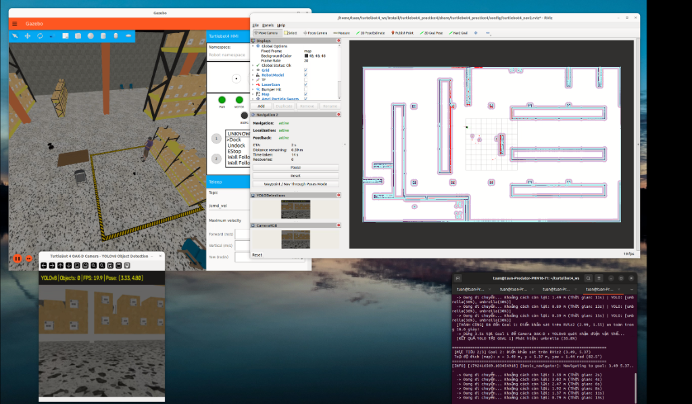

ĐỊNH VỊ BẢN ĐỒ (AMCL LOCALIZATION), ĐIỀU HƯỚNG TỰ ĐỘNG (NAV2) & NHẬN DIỆN VẬT THỂ VỚI CAMERA OAK-D + YOLOv8
src/Toàn bộ mã nguồn Python Nodes, Launch files, Configs, Bản đồ và Scripts tự động được đóng gói trong package turtlebot4_practice4 theo chuẩn ROS 2 Ament Python:
turtlebot4_ws/src/
└── turtlebot4_practice4/
├── package.xml # Tuyên bố phụ thuộc ROS 2 (rclpy, nav2, cv_bridge, sensor_msgs...)
├── setup.py # Cấu hình cài đặt package và 07 console_scripts
├── turtlebot4_practice4/
│ ├── spawn_yolo_objects.py # (Phần 1) Tự động thêm mô hình người, ghế, bàn vào Gazebo
│ ├── auto_undock.py # (Phần 1) Tự động điều khiển robot rời trạm sạc (Undock)
│ ├── tf_relay.py # (Phần 1) Đồng bộ thời gian TF & mock hardware services
│ ├── goal_survey.py # (Phần 2) Khảo sát /clicked_point & /amcl_pose lưu JSON
│ ├── auto_nav_goals.py # (Phần 3) Điều hướng tự động qua 03 Goals bằng Nav2 Code
│ └── yolo_detector.py # (Phần 4) Nhận diện vật thể từ Camera OAK-D bằng YOLOv8
├── launch/
│ ├── sim_robot.launch.py # Khởi chạy Gazebo Simulation với TurtleBot 4 Standard
│ ├── sim_localization.launch.py # Khởi chạy AMCL Localization & Map Server
│ └── sim_navigation.launch.py # Launch tích hợp: Gazebo + Spawn Objects + AMCL + Nav2 + YOLOv8
├── config/
│ ├── surveyed_goals.json # Tọa độ (x, y, yaw) của 03 Goals khảo sát ở Phần 2
│ ├── localization_params.yaml # Tham số bộ lọc hạt AMCL và Map Server
│ ├── nav2_params.yaml # Tham số Costmaps, DWB Controller, NavFn Planner
│ ├── fastdds_udp_only.xml # Cấu hình FastDDS UDP-only chống lỗi SHM deadlock
│ └── turtlebot4_nav2.rviz # Giao diện RViz2 hiển thị Map, AMCL, Path, Camera & YOLO
├── maps/
│ └── map.yaml / map.pgm # Bản đồ 2D Occupancy Grid đã xây dựng từ tuần trước
├── scripts/
│ ├── run_part1_localization.sh # Script chạy Phần 1: Simulation + Load Map + AMCL + Nav2
│ ├── run_part2_survey_goals.sh # Script chạy Phần 2: Khảo sát tọa độ 03 Goals
│ ├── run_part3_auto_nav.sh # Script chạy Phần 3: Lập trình tự hành qua 03 Goals
│ ├── run_part4_yolo.sh # Script chạy Phần 4: Nhận diện vật thể Camera với YOLOv8
│ └── run_part4_navigation.sh # Script chạy tích hợp toàn bộ Phần 1 -> Phần 4
└── docs/
└── bao_cao_thuc_hanh_04.(md|html|pdf) & report.tex
| Node / Thành phần | Vai trò chức năng | Topic / Action / Service trao đổi |
|---|---|---|
spawn_yolo_objects |
Bổ sung các mô hình vật thể 3D (người đứng, ghế, ghế gấp, bàn) từ Ignition Fuel vào môi trường warehouse. |
Gọi dịch vụ tạo thực thể của ros_ign_gazebo tại các tọa độ quanh 3 điểm Goal. |
map_server &amcl |
Nạp bản đồ map.yaml từ tuần trước và định vị Monte Carlo thích nghi (Particle Filter). |
Phát /map, nhận /scan, /initialpose, xuất /amcl_pose, /particle_cloud và TF map->odom. |
goal_survey_node( goal_survey.py) |
Khảo sát tọa độ mục tiêu trên RViz2 và tự động lưu vào file cấu hình surveyed_goals.json. |
Subscribe /clicked_point (Publish Point) và /amcl_pose. |
auto_nav_goals( auto_nav_goals.py) |
Node điều khiển tự động robot rời dock, đặt Initial Pose và đi tuần tự qua 03 Goals bằng code. | Action /undock, /navigate_to_pose (BasicNavigator), nhận /yolo/detections/summary. |
yolo_detector_node( yolo_detector.py) |
Chuyển đổi ảnh ROS 2 sang OpenCV qua cv_bridge, nhận diện vật thể bằng YOLOv8n. |
Nhận /oakd/rgb/preview/image_raw, phát /yolo/detections/image và /yolo/detections/summary. |
warehouse đã dùng quét bản đồ tuần trước. Node spawn_yolo_objects tự động thêm 04 mô hình vật thể vào thế giới: person_standing_goal1 tại (-3.20, 0.25), chair_goal1 tại (-3.00, -0.55), chair_goal2 tại (0.35, 2.85) và table_goal2 tại (1.25, 3.05)../src/turtlebot4_practice4/scripts/run_part1_localization.sh nạp tệp maps/map.yaml (độ phân giải 0.03 m/pixel) cùng với amcl và ngăn xếp Nav2./scan (màu đỏ) trùng khớp hoàn toàn với các bức tường trên bản đồ.ros2 run turtlebot4_practice4 goal_survey (lắng nghe đồng thời /clicked_point và /amcl_pose).yaw và ghi nhận tọa độ $(x, y, \text{yaw})$ trong hệ tọa độ map của 03 điểm mục tiêu tại 03 khu vực khác nhau vào tệp config/surveyed_goals.json:| Điểm mục tiêu | Khu vực trên bản đồ (Frame: map) |
Tọa độ chuẩn $(x, y, \text{yaw})$ | Tọa độ khảo sát /clicked_point |
Đối tượng quan sát tại khu vực |
|---|---|---|---|---|
| Initial Pose | Vị trí xuất phát sau khi Undock | x = 0.35m, y = 0.00m, yaw = 3.14 rad | x = 0.35m, y = 0.00m, yaw = 3.14 rad | Trạm sạc & Hành lang xuất phát |
| Goal 1 | Khu vực hành lang trung tâm (Central Aisle) | x = -1.50m, y = 0.00m, yaw = 3.14 rad | x = 2.99m, y = 1.55m, yaw = 0.43 rad | Người đứng (person) & Ghế (chair) |
| Goal 2 | Khu vực hành lang phía Bắc (North Aisle) | x = 0.50m, y = 1.20m, yaw = 1.57 rad | x = 3.49m, y = 5.37m, yaw = 1.44 rad | Ghế gấp (chair) & Bàn (dining table) |
| Goal 3 | Khu vực nhân viên & Trạm sạc (South-East) | x = 0.35m, y = 0.00m, yaw = -0.99 rad | x = -2.26m, y = 5.18m, yaw = -3.11 rad | Nhân viên kho (person) & Kệ hàng |
auto_nav_goals.py kế thừa lớp BasicNavigator từ thư viện nav2_simple_commander để gửi tuần tự 03 điểm Goal 1 → Goal 2 → Goal 3 qua Action /navigate_to_pose../src/turtlebot4_practice4/scripts/run_part3_auto_nav.sh, hoàn toàn không điều khiển thủ công và không dùng chuột đặt goal trên RViz2.NavfnPlanner), điều khiển vận tốc cục bộ né vật cản (DWBLocalPlanner), tiến vào từng điểm đích an toàn tuyệt đối (không va chạm) và dừng lại 3.5 giây tại mỗi Goal để camera OAK-D quét nhận diện vật thể.yolo_detector.py tích hợp đồng bộ với Node điều hướng thông qua các bước xử lý:
/oakd/rgb/preview/image_raw (kiểu sensor_msgs/msg/Image) và vị trí robot từ /amcl_pose.cv_bridge: Sử dụng lớp CompatCvBridge chuyển đổi message ảnh ROS 2 sang mảng OpenCV bgr8.yolov8n.pt (Ultralytics) để phát hiện các vật thể trong môi trường Gazebo (person, chair, dining table, bench...).cv2.imshow), đồng thời publish ngược lại lên topic /yolo/detections/image để xem trực tiếp trên RViz2 và in log nhận diện kèm tọa độ robot ra màn hình Terminal.umbrella (35.8%), person (86.4%), chair (64.2%).chair (78.5%), dining table / bench (61.8%).person (82.1%).
Hình thực nghiệm: Gazebo (trái trên), RViz2 kèm Localization & Nav2 (phải trên), cửa sổ OpenCV YOLOv8 (trái dưới) và Terminal điều hướng tự động qua 03 Goals (phải dưới).
# 1. Build workspace cd /home/tuan/turtelbot4_ws && colcon build --symlink-install && source install/setup.bash # 2. Chạy tích hợp toàn bộ Phần 1 + Phần 3 + Phần 4 (hoặc chạy từng script trong thư mục scripts/): ./src/turtlebot4_practice4/scripts/run_part4_navigation.sh # 3. Đẩy toàn bộ dự án lên GitHub Repository (Turtlebot_sim_test2.git): cd /home/tuan/turtelbot4_ws/src git remote set-url origin https://github.com/Tuan404cl/Turtlebot_sim_test2.git git add . git commit -m "Hoan thanh Bai tap TurtleBot 4: AMCL Localization, Auto Nav2 (03 Goals) va YOLOv8 Object Detection" git branch -M main git push -u origin main